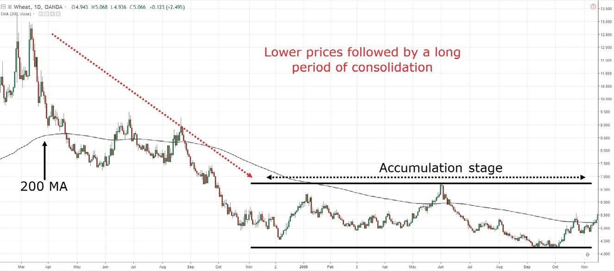
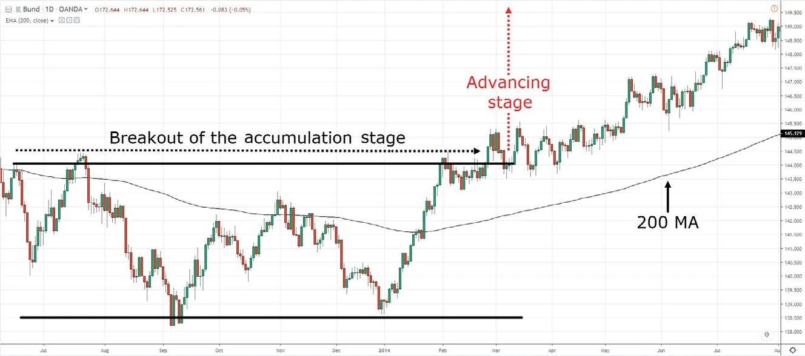
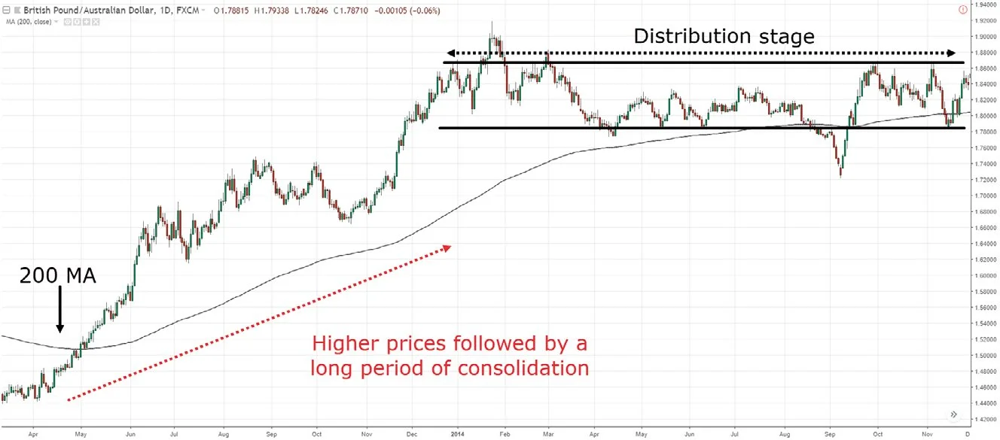
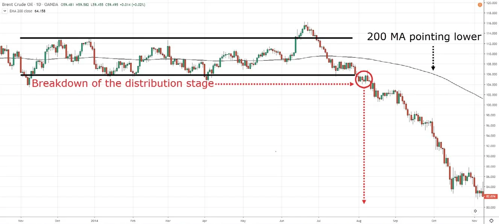

When I started trading, I always wondered if there was a secret pattern that the smart money knew that I didn’t. Otherwise, how could you explain a sudden collapse in the price when the market was looking bullish (or a sudden rally when the market looked “dead”)?
Then, I studied the works of Richard Wyckoff and Stan Weinstein. That’s when things finally made sense. You see, the market doesn’t go up and down in a straight line. There’s an ebb and flow to it. If you pay close attention, you’ll realize the market moves in stages: accumulation, advancing, distribution, and declining. This means if you know what stage the market is at, you’ll never have to second guess whether you should be buying or selling. Everything becomes clear, as if you have X-ray vision for seeing what the market is really doing. Sound awesome? Then let’s get started.
An accumulation stage occurs after a decline in price, and it looks like a range market within a downtrend. The logic behind this is the market can only go so low before the buyers step in and push the price higher.
When that happens, you’ve got traders selling in the downtrend and traders buying at “cheap” prices. When these two forces collide, the market goes into an equilibrium, otherwise known as an accumulation stage.
Now, it’s called an accumulation stage because this is where the smart money accumulates their position in anticipation of higher prices to come.
Here are the characteristics of an accumulation stage:
Here’s an example of an accumulation stage:
Now, this is important. Just because the market is in an accumulation stage doesn’t mean it will break out higher. It can also break down. And if that happens, the downtrend resumes (remember, trading is about probabilities, never certainties).
But if the market breaks out of resistance, that’s where we move onto the next stage.
The advancing stage occurs when the price breaks out of resistance (from the accumulation stage), which is otherwise known as an uptrend. This happens because the market can’t remain in a range forever. Eventually, one side of the market will dominate and that’s the start of a new uptrend (or the resumption of the downtrend).
So for an advancing stage to occur, the buying pressure must overcome the selling pressure, which leads to the start of a new uptrend.
Here are the characteristics of an advancing stage:
Here’s what I mean:
A distribution stage occurs after an advance in price, and it looks like a range market within an uptrend. The logic behind this is that the market can only go so high before the sellers come and short the markets.
When this happens, you’ve got traders buying in an uptrend and traders shorting at “high” prices. When these two forces collide, the market goes into an equilibrium, otherwise known as the distribution stage.
At this point, it’s called a distribution stage because this is where the smart money distributes away their position in anticipation of lower prices to come.
It looks something like this:
The declining stage occurs when the price breaks down of support (from the distribution stage), otherwise known as a downtrend. This is because the market can’t remain in a range forever. Eventually, one side of the market will dominate, and that’s either the start of a new downtrend (or the resumption of the uptrend).
So for a declining stage to occur, the selling pressure must overcome the buying pressure, which leads to the start of a new downtrend.
Here’s an example:
Now you might be thinking, “What’s the point of learning these four stages of the market?” It’s this: If you can identify which stage the market is in, you’ll know whether to be a buyer or seller.
For example, if the market is in a potential accumulation stage, then you know there’s a huge potential upside if the price breaks above resistance, so you’ll want to look for buying opportunities. Perhaps near the lows of support, the breakout of resistance, or the first pullback after the breakout, etc.
And if the market is in a declining stage? Then you’ll want to look for shorting opportunities, possibly towards an area of value like support, a moving average, etc. Can you see how useful this is?
Okay, I’ll be honest. There will be times when the market structure isn’t obvious. So what do you do in this scenario? You stay out of that market. There are plenty of trading opportunities with “cleaner” market structure. So don’t force a trade if you don’t have a read on the markets.
You’ve learned about market structure and you understand how the market really moves (with the help of the concepts from the four stages).
This means you know what to do in different market conditions, whether to buy, sell, or stay out of the markets.
However, market structure doesn’t tell you where to enter or exit your trades. I’ve saved that for the next chapter, so read on.